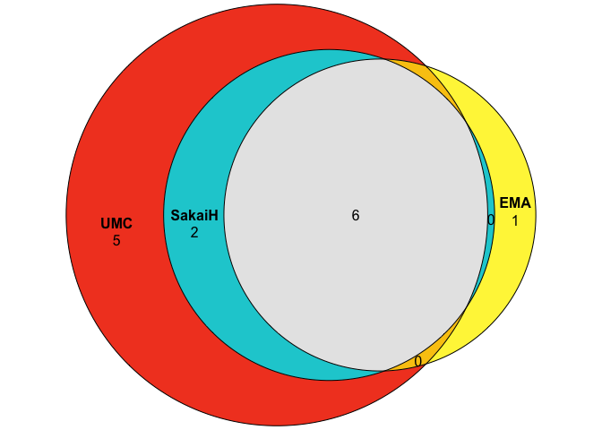

PVgravID is an R package for the identification and comparison of pregnancy-related reports in large pharmacovigilance databases, specifically implemented to VigiBase and FAERS. It implements and harmonizes three published rule-based algorithms for flagging pregnancy-related adverse event reports, enabling researchers to systematically retrieve, compare, and analyze such reports across different data sources.
PVgravID implements:
three published algorithms for identifying pregnancy-related reports:
Harmonized logic for cross-database comparison
Function to tailor the algorithms to the researcher specific need
Functions for descriptive analysis and visualization (Venn diagrams, upset plots)
Interoperable with the DiAna R package for pharmacovigilance data
Installation
You can install the development version of PVgravID from GitHub with:
# install.packages("pak")
pak::pak("PVverse/pv_mater")Data
This project used both VigiBase data (as available to the Uppsala Monitoring Centre) and FAERS data (as provided in a cleaned form by the DiAna package. To install it follow the instruction at the https://github.com/fusarolimichele/DiAna_package github.
The following script will use the FAERS data, because of it ready availability to the public. The package expects input data in the format used by the DiAna package, with data tables for demographics, drugs, reactions, indications, outcomes, etc.
Usage
We first import the library used and, following DiAna workflow, we define the dataset we want to work with: “sample”, a sample of the FAERS included in the DiAna package.
The main function of the package is generate_pregnancy_flags, which takes a list of report identifiers (in our case all the reports included in Demo) and import them from the data folder included in the same project folder (as in the DiAna directory structure), and assess each report for the inclusion and exclusion criteria of the three different pregnancy algorithms.
matrix_flagged_for_pregnancy <- generate_pregnancy_flags("sample")
UMC_pregnancy_reports <- matrix_flagged_for_pregnancy[UMC == TRUE]$primaryid
EMA_pregnancy_reports <- matrix_flagged_for_pregnancy[EMA == TRUE]$primaryid
SakaiHPPV_pregnancy_reports <- matrix_flagged_for_pregnancy[SakaiHPPV == TRUE]$primaryid
render_venn(pids_sets = list("UMC" = UMC_pregnancy_reports, "EMA" = EMA_pregnancy_reports, "SakaiH" = SakaiHPPV_pregnancy_reports))
As it can be observed, the outcome of the function is a matrix with: in the first column the primaryid, then 34 columns specifying whether specific exclusion or inclusion criteria are respected, and finally 5 columns specifying whether the report is flagged or not by each of the 5 pregnancy algorithms here implemented (UMC, EMA, and the 3 Sakai with different intended performance). See the function documentation (?check_pregnancy_criteria) for details, and the article on the website (TO BE ADDEEEEEEEEEEEEEEEED) for more extensive use cases.
Study Reference
This package was developed as part of the following study:
Exploring and Comparing Existing Algorithms for Flagging Pregnancy-related Adverse Event Reports
Sara Hedfors Vidlin, Valentina Giunchi, Levente K-Pápai, Lovisa Sandberg, Cosimo Zaccaria, Takamasa Sakai, Loris Piccolo, Elena Rocca, Michele Fusaroli, Nhung TH Trinh